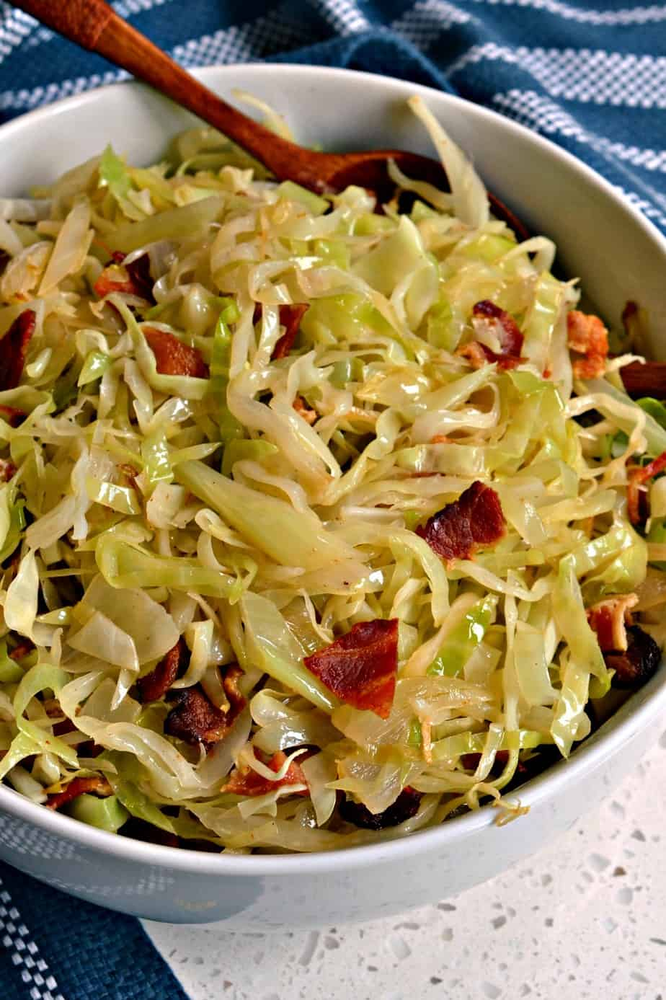

Fried Cabbage

Easy and fast recipe
Deliciously seasoned tender fried cabbage and onions with crispy bacon is a family favourite. A quick one pot recipe suitable for any time of the year.
Best thing is it’s inexpensive and reheats perfectly in your microwave.
Ingredients
- 2 tablespoons grapeseed oil
- 1 medium yellow onion, chopped
- 3 cloves garlic, chopped
- 2 teaspoons Cajun seasoning, or to taste, divided
- ½ red bell pepper, sliced
- ½ medium green bell pepper, sliced
- 1 medium head cabbage, thinly sliced
- 1 tablespoon butter, or more to taste (Optional)
- salt and ground black pepper to taste
Steps
- Heat grapeseed oil in a large cast iron skillet over medium heat
- Add onions and cook until softened, about 3 minutes
- Add garlic, stir, and cook until fragrant, 1 to 2 minutes
- Season with 1 teaspoon Cajun seasoning and stir to combine
- Mix in red and green bell peppers; cook for 1 to 2 minutes
- Add cabbage, remaining 1 teaspoon Cajun seasoning, and stir to combine
- Add butter and stir until melted.
- Simmer cabbage until it reaches desired softness, about 15 minutes
- Season with salt and pepper
home